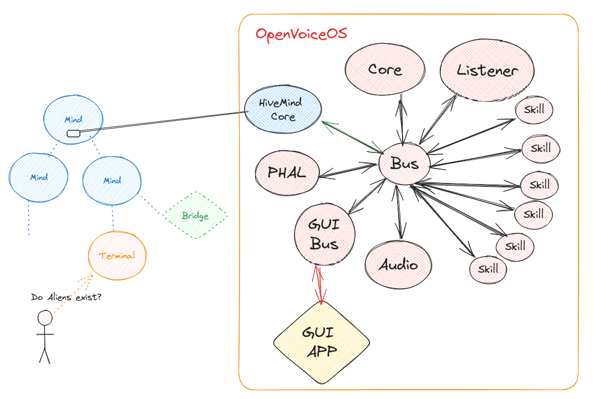

OpenVoiceOS - HiveMind's Natural Language Backbone

Hivemind-core is the reference integrations with OpenVoiceOS
Install
Install from Github
Usage
Everything is done via the hivemind-core command, see pairing for more info
$ hivemind-core --help
Usage: hivemind-core [OPTIONS] COMMAND [ARGS]...
Options:
--help Show this message and exit.
Commands:
add-client add credentials for a client
allow-msg allow message types sent from a client
delete-client remove credentials for a client
list-clients list clients and credentials
listen start listening for HiveMind connections
$ hivemind-core listen --help
Usage: hivemind-core listen [OPTIONS]
start listening for HiveMind connections
Options:
--host TEXT HiveMind host
--port INTEGER HiveMind port number
--ssl BOOLEAN use wss://
--cert_dir TEXT HiveMind SSL certificate directory
--cert_name TEXT HiveMind SSL certificate file name
--help Show this message and exit.
Why
HiveMind can be used to build many things, theres some jargon and lots of stuff potentially going on, let's explore what it can do, and by the end hopefully you will understand how it relates to OpenVoiceOS
- the hivemind is a OVOS add-on
- the hivemind connects devices
- the hivemind decentralizes ovos-core
- the hivemind encrypts the messagebus
- the hivemind authenticates the messagebus
- the hivemind safely exposes OVOS to the web
- the hivemind isolates the messagebus
- the hivemind is a protocol that transparently integrates with OVOS
- the hivemind can be used to integrate OVOS with any platform
the hivemind is a OVOS add-on
Since the hivemind is focused on OVOS, let's start there
- step 1: install ovos-core / own a mycroft device / install a project shipping mycroft
- step 2: run hivemind-core in that device
- step 3: :tada:
This is the gist of it, you have a voice assistant and it can do things! It has a brain of sorts
I will refer to this as the OVOS node in the other examples
Ok, we installed it but still don't know anything about the hivemind, what does it do?
the hivemind connects devices
If you are like me and live in the terminal, wouldn't it be nice to just ask a quick question?
- step 1: install the cli terminal and register it (see below) in the OVOS node
- step 2: if auto discovery is enabled in the OVOS node it will auto connect, alternatively you can specify an ip address directly
- step 3 :tada:
isnt this the same thing as the mycroft debug cli but with extra work?
No! the terminal is running in your laptop and OVOS is in a different room of the house
the hivemind decentralizes ovos-core
With the hive mind we can create all kinds of thin clients that don't actually run OVOS
- step 1: install the voice satellite or the push to talk node, eg, in a raspberry pi 0
- NOTE: PTT is in the process of being merged into the voice satellite
- step 2: if auto discovery is enabled in the OVOS node it will auto connect, alternatively you can specify an ip address directly
- step 3 :tada:
Now you can access the OVOS node anywhere in your house, get a microphone in each room!
the hivemind encrypts the messagebus
I have seen many people host OVOS in the cloud, but the messagebus in unencrypted and doesn't even support ssl, a common solution is to setup nginx and/or smartgic docker image
hivemind supports ssl connections, and will even auto generate self signed certificates, however self signed certificates are unsafe
managing ssl certificates at home can get messy really fast, as part of the registration process the hivemind will AES encrypt every payload. This makes ssl essentially optional
- step 1: install the local webchat
- step 2: open
http://{ip_address}:9090in your browser - step 3: :tada:
NOTE: currently device password is assumed to be pre shared out of band to ensure a human in the loop
the hivemind authenticates the messagebus
the message bus is a privacy nightmare and should be closed from the outside world, anyone can connect to it and capture every single thing going on in "OVOS's nervous system" or inject new commands
- step 1: install ovos_utils on your OVOS node (or get it's ip address)
- step 2: run the ovos_utils metrics example with that ip address
- step 3: :question: (spyware)
By default the hivemind requires authentication, think of this like the token you would be given for any http api, unregistered clients can not connect to the hivemind
This is why hivemind has a registration process
the hivemind safely exposes OVOS to the web
since there is a local chat node, can we get OVOS on a server and expose it to the public?
Yes! There is a catalan voice assistant built on top the hivemind, you can test it and check github
- step 1: install the flask chatroom template
- step 2: navigate to
http://{ip_address}:8081 - step 3 :tada:
the hivemind isolates the messagebus
I don't care about hackers and privacy, its all in my super safe network, Why not connect to the messagebus directly like the android passthrough app does? is the hivemind still needed?
- step 1: install the android app
- step 2: get the ip address of your OVOS node and set the url as
ws://{ip_address}:8181 - step 3: :x: (disable the firewall in OVOS device)
- step 4: :question:
When you use the android app you will notice that you get the answers from any question asked in the actual OVOS device in your phone, and that your device speaks everything you ask from the phone out loud.
this is solved by including proper metadata in the bus message.context, you can read more about how ovos-core routes messages internally in the wiki. each connected client only receives what it should, not everything
the hivemind is a protocol that transparently integrates with OVOS
can we connect the android app using hivemind?
- step 1: install the android app
- step 2: get the ip address of your OVOS node and set the url as
wss://{ip_address}:5678?authorization={encoded}- TODO this url will generate the encoded url for you
- decoding # encoding # encoding javascript #
- TODO need a flag in hivemind-core to support this (assume all messages are payloads of type "bus") per client (?)
- step 3 :x: NOT YET!
Does this mean we can turn any OVOS thingy in a hivemind node? we are getting there...
- isolation
- authentication
- NO ENCRYPTION :x:
the hivemind can be used to integrate OVOS with any platform
How many times have you wanted to integrate OVOS with a chat platform? maybe just for a quick demo?
- step 1: install the hackchat bridge
- step 2: go the newly created channel and invite anyone to check it out
- step 3 :tada: shared OVOS with friends
What about something more useful?
- step 1: install the mattermost bridge
- step 2: create skills and tell your coworkers how to use them in their workflow
- step 3 :tada: OVOS is a productivity tool
Even if not interested in exposing it to the public there are some private and secure ways to interact with your OVOS node
- step 1: install the deltachat bridge
- step 2: install ðeltachat in your phone
- step 3 :tada: control OVOS from your phone
How can you use the hivemind to integrate with an existing service, maybe it's for costumer support on some platform
- step 1: install the twitch bridge
- step 2: create skills to provide support to your users
- TIP: add a greeting and help command
- step 3 :tada: OVOS is a chatbot